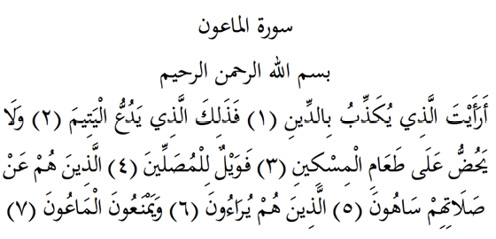

7

Maûn Suresi
Anlamı: Er-Rahman, er-Rahim Allah’ın adıyla
Hesap gününü yalanlayan şu adam için ne dersin? (1). O bir de yetimi iter (2), miskini doyurmaya bile teşvik etmezse? (3)... Vay o namaz kılanlara ki, (4) namazlarından haberleri yok (5). Gösteriş yapıyorlar ve günlük ihtiyaçlar için ödünç istenen araç gereçleri dahi vermiyorlar (7).
Açıklama: Demek ki, hesap gününü inkâr etmemiş olsaydı kendisinde bu olumsuzlar bulunmazdı. (Zemahşeri)
Maûn: Komşuların günlük ihtiyaçları için birbirlerinden istedikleri iğneden bineğe kadar araç gereçlerdir. Bazılarına göre de zekât başta olmak üzere verilmesi gereken haklardır.